Mod는 플러그인 세 파일이에요
Mods는 Claude Code 화면을 내가 직접 바꿀 수 있게 해 주는 기능이에요. 입력창 위에 원하는 정보를 띄우고, 옆에 에이전트 작업 패널을 붙이고, 응답 속 이메일을 눌러야 보이게 가릴 수도 있어요. 영상이 강조하는 건 이게 공식 지원이라 Claude Code의 원래 화면에 그대로 붙는다는 점이에요.
아래는 영상 앞부분에 나온 Mod 목록 화면이에요. 맨 위 Codefactory email mask가 이 영상에서 뜯어볼 이메일 가림 모드예요. 그 아래 Ko ui, Cc arcade, Codefactory mermaid, Terminal browser, Cc pr tracker, Token weather는 뒤에 나올 사용 사례들이에요.
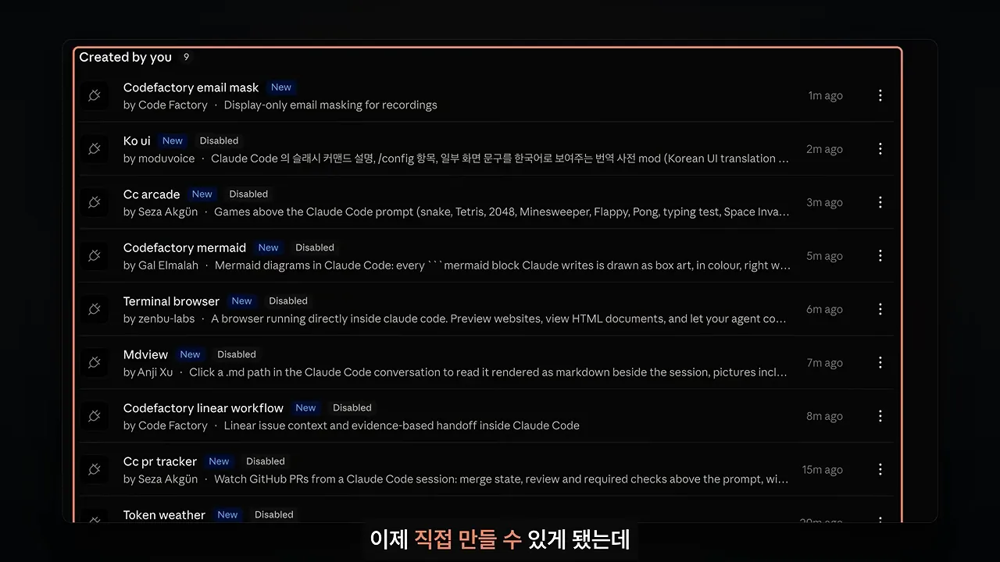
파일 세 개면 돼요
Mod는 Claude Code 플러그인으로 만들어요. 화면 위쪽 .claude-plugin/plugin.json에는 이름(codefactory-email-mask), 버전, 설명을 적어요. 가운데 hooks/hooks.json은 "modules" 배열 하나뿐이고, 여기에 실행할 코드 파일 경로(./register.js)를 넣어요. 실제 기능은 맨 아래 register.js에 써요.
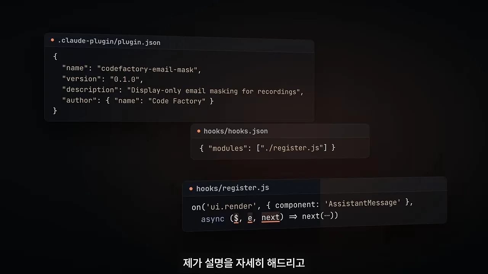
말로는 TypeScript 파일이라고 하지만 이 예제 화면의 파일은 register.js예요. 영상 끝부분 화면에서는 register.ts도 나와서, 둘 다 쓸 수 있는 것으로 보여요.
언제 실행될지는 이벤트로 정해요
Claude Code는 일을 할 때마다 이벤트를 일으켜요. 오른쪽에 적힌 세 가지가 영상이 꼽은 대표 이벤트예요. 프롬프트를 보낼 때 prompt.submit, 도구를 부를 때 tool.call, 응답을 화면에 그릴 때 ui.render예요. 원하는 이벤트에 함수를 등록하면, Claude Code가 그 일을 하기 직전에 내 함수를 불러요. 영상은 이게 기존 훅 기능과 아주 비슷하다고 해요.
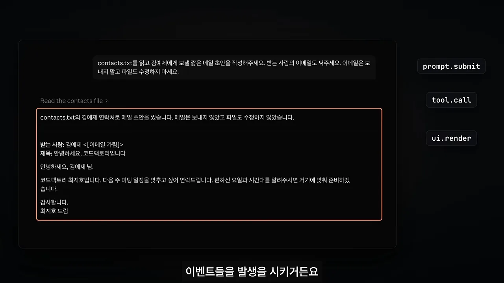
미들웨어처럼 끼어드는 구조
구조는 웹 개발의 미들웨어와 같아요. Claude Code가 원래 하던 일을 하기 전에 내 함수가 중간에서 가로채서 내용을 확인하거나 바꿔요. 아래 그림의 세 칸이 그 흐름이에요. 왼쪽 ui.render 이벤트가 생기면 가운데 register.js의 내 함수를 거쳐서 오른쪽 Claude Code가 화면에 표시해요. 이메일을 가리고 싶다면 이 가운데 칸에서 주소를 바꿔 넘기면 돼요.
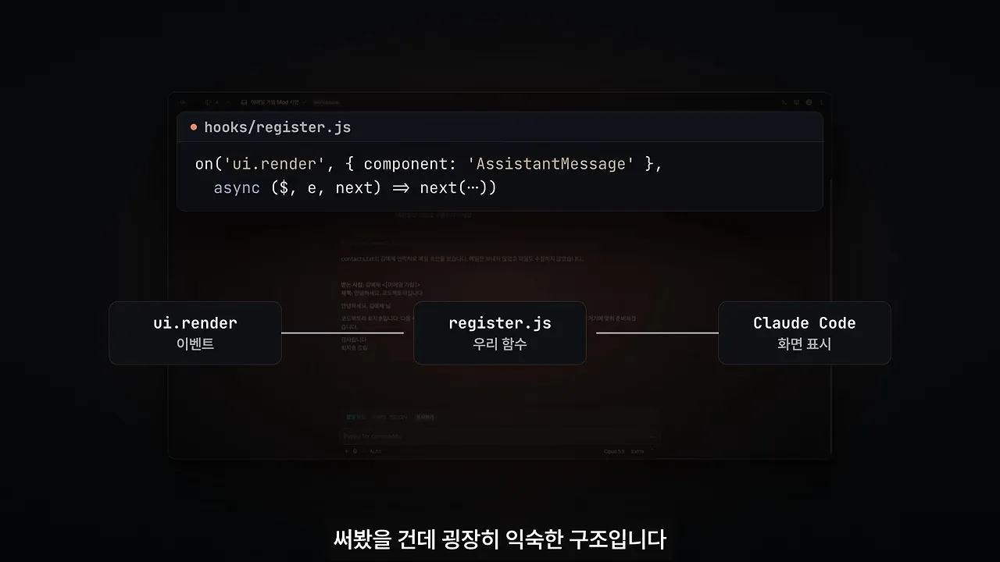
함수가 받는 세 가지
함수는 ($, e, next) 세 개를 받아요.
| 인자 | 영상의 설명 | 예시 |
|---|---|---|
$ | Claude Code 기능을 쓰는 통로 | 패널 열기, 파일 읽기, 모델 호출 |
e | 지금 일어난 이벤트 정보 | 표시할 응답, 호출할 도구 정보 |
next | 다음 미들웨어로 넘기는 콜백 | next(e) |
아래 화면은 $로 할 수 있는 일을 실제 코드로 보여 줘요. $.ui.open으로 browser라는 패널을 열고, $.fs.read로 파일을 읽고, $.prompt.submit으로 모델에 프롬프트를 보내요. 코드 위 이름표 04-browser · 03-paragraph-edit는 뒤에 나올 브라우저 사례와 문단 수정 사례에서 가져온 코드라는 뜻이에요.
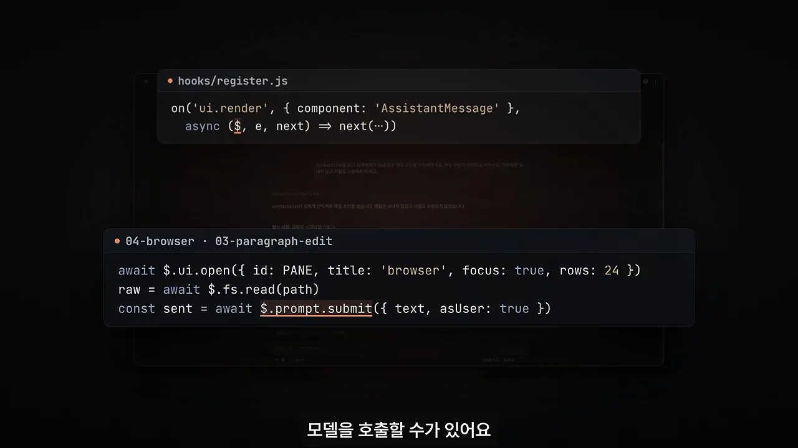
$ 하나로 열려 있어요. 영상 02:14에서 보기next를 어떻게 부르느냐가 결과를 정해요
오른쪽 세 줄이 선택지예요. next(e)는 이벤트를 그대로 넘겨서 기본 처리를 유지해요. next({ ...e })처럼 바꾼 이벤트를 넘기면 다음 단계가 바뀐 props를 써요. next를 부르지 않고 바로 return하면 반환한 값이 그대로 출력이 돼요. 화면 아래 응답에 '가상 연락처입니다' 문구가 찍힌 게 이 마지막 경우의 예예요.
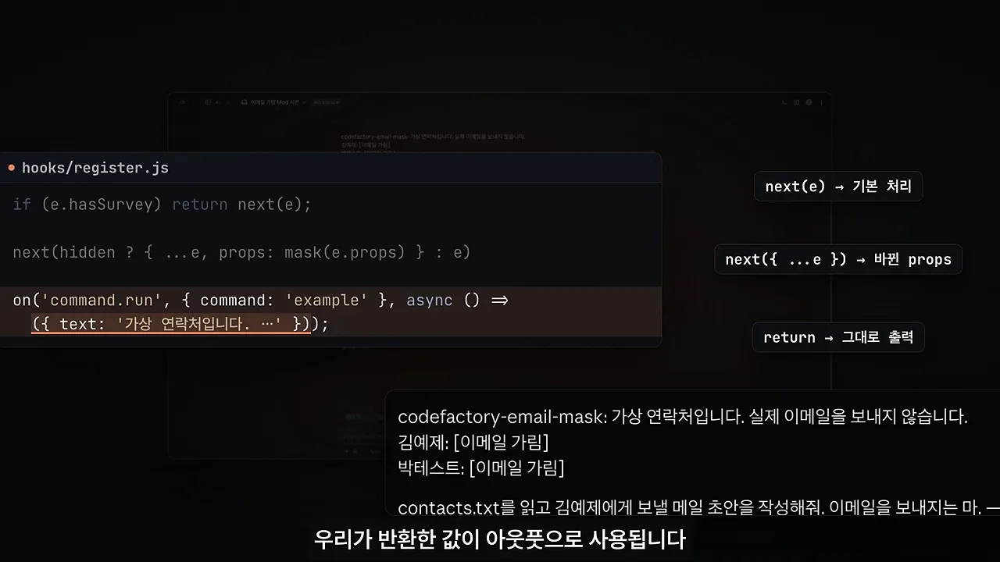
이렇게 작업 상태를 읽어서 표시하고, 응답에 보이는 내용을 바꾸고, 버튼과 패널로 필요한 기능을 따로 만들 수 있어요.
이메일 가림 모드 뜯어보기
이제 구조를 실제 화면과 맞춰 봐요. Claude 응답에 이메일 주소가 나오는데, 촬영 중이거나 보안 때문에 가리고 싶을 때가 있어요. 이 모드를 켜면 받는 사람 칸에 주소 대신 [이메일 가림]이 보여요. 입력창 위 띠에는 촬영 모드, 이메일 가림 ON, 표시하기 버튼이 붙어요.
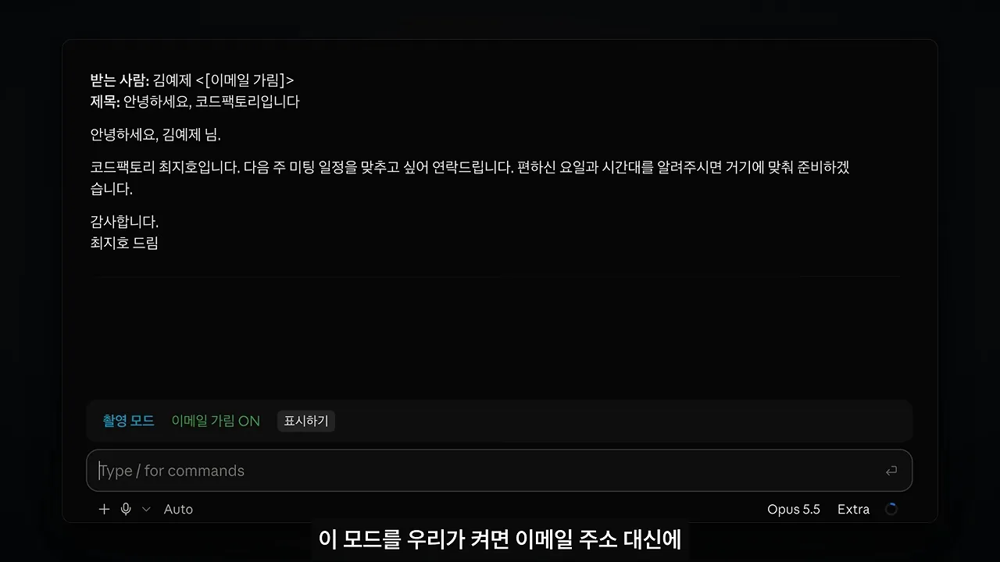
응답을 그릴 때 이메일을 바꿔치기해요
핵심은 ui.render에 함수를 등록하되 AssistantMessage를 지정하는 거예요. 그러면 Claude의 응답을 화면에 그릴 때만 이 함수가 불려요. 아래 코드 맨 위 const EMAIL이 이메일을 찾는 정규식이고, mask 함수가 문자열 속 주소를 '[이메일 가림]'으로 바꿔요. 등록부의 next(hidden ? { ...e, props: mask(e.props) } : e)가 앞에서 본 '바꿔 넘기기'예요.
강조된 줄 let hidden = true;가 스위치예요. hidden이 켜져 있으면 가리고, 꺼져 있으면 원래 이벤트를 그대로 넘겨요.
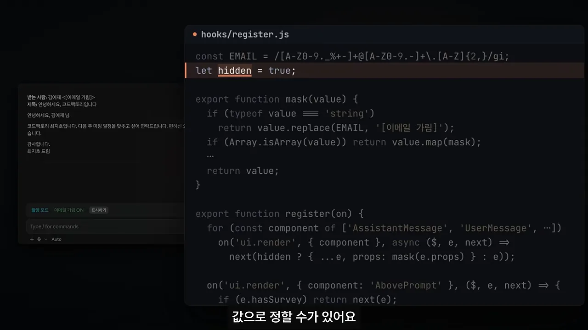
입력창 위에 버튼을 붙여요
버튼은 AbovePrompt에 그려요. 이름 그대로 입력창 바로 위 영역이에요. 코드에서 $.ui.resolve(e)로 Box, Text, Button을 꺼내 글자 두 개와 버튼 하나를 가로로 놓아요. 강조된 onPress가 버튼을 눌렀을 때의 동작이에요. hidden = !hidden으로 값을 뒤집고 $.ui.invalidate('ui.render')로 화면을 다시 그리게 해요.
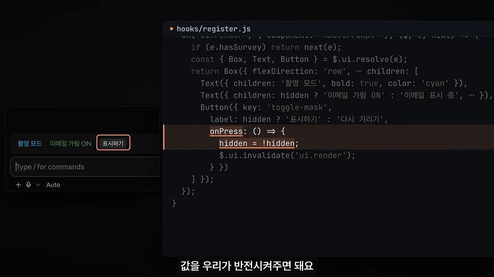
hidden에 따라 표시하기와 다시 가리기로 바뀌어요. 영상 04:01에서 보기코드 두 조각이 어떻게 맞물리는지는 여러 화면에 나뉘어 나와요. 한 번에 보면 이래요. 버튼을 누를 때마다 같은 고리를 한 바퀴 돌고, 마지막 갈림길에서 hidden 값에 따라 보이는 글자가 달라져요.
ui.render 훅이 해요. 그래서 버튼 코드와 가림 코드가 따로 떨어져 있어도 맞물려요.바뀌는 건 화면뿐이에요
영상이 특히 강조하는 부분이에요. 왼쪽 위 contacts.txt가 원본 데이터예요. 모델은 여기 있는 kim.demo@example.com으로 메일 초안을 써요. 그 결과가 오른쪽 '원래 내용'이고, ui.render → 화면 표시를 거친 아래 칸에서만 주소가 [이메일 가림]으로 바뀌어요.
영상은 이 예제를 일반적인 설계 순서로 정리해요. 화면의 어느 부분을 바꿀지 정하고, 그 이벤트에 코드를 걸고, 클릭하면 상태가 바뀌도록 만들어요. 같은 방식으로 입력창 위에 상태를 띄우거나 옆에 작업 패널을 붙일 수 있어요.
많이 쓰는 사례 10가지
영상 후반은 사람들이 많이 쓰는 Mod 열 가지를 빠르게 훑어요. 먼저 한눈에 보면 이래요. '붙는 자리'는 영상에서 말한 위치이고, 말이 없던 것은 화면을 보고 적었어요.
| # | 사례 | 붙는 자리 | 하는 일 |
|---|---|---|---|
| 1 | PR 상태 | 입력창 위 | 리뷰·검사 상태를 바로 확인 |
| 2 | Linear 연결 | 패널 (화면 기준) | 이슈 검색 → 작업 요청 → 댓글 초안 |
| 3 | 문단 수정 | 옆 패널 | 문단을 골라 코멘트로 수정 요청 |
| 4 | 브라우저 | Claude Code 옆 | 대화와 웹페이지를 한 화면에 |
| 5 | 다이어그램 | 응답 자리 | Mermaid 코드를 도식으로 그려 줌 |
| 6 | 게임 | 패널 (화면 기준) | 응답 기다리는 동안 게임 |
| 7 | 한국어 UI(User Interface) | 설정 화면 | 명령어 설명과 설정 항목 번역 |
| 8 | 문자 가림 | 응답 자리 + 입력창 위 | 민감한 값을 가리고 버튼으로 확인 |
| 9 | 컨텍스트 사용량 | 입력창 위 | 현재 사용량과 최근 턴의 증가량 |
| 10 | 에이전트 관제 | 옆 패널 | 실행 중인 에이전트와 내역 모아 보기 |
1. PR 상태
입력창 바로 위에 한 줄이 붙어요. claude-code#99540 옆에 blocked · review required, 통과한 검사 수가 색으로 나와요. 코드를 쓰면서 PR에 무엇이 남았는지 같이 볼 수 있어요.
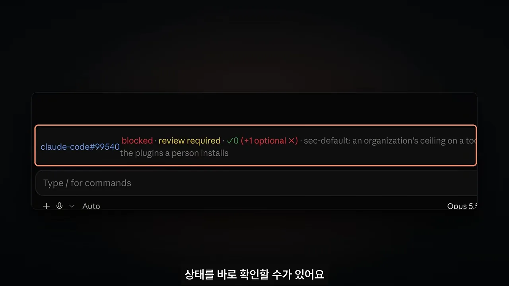
2. Linear 연결
Claude Code 안에서 이슈를 검색하고, 고른 이슈를 바로 작업 요청으로 넘겨요. 화면 위쪽 상자가 고른 이슈 COD-233(로그인 후 원래 페이지로 돌아가기)이고, 그 아래 1 이슈 확인 → 2 테스트 → 3 결과 정리가 진행 단계예요. 코드 수정과 테스트가 끝나면 결과를 댓글 초안으로 정리해 올릴 수도 있어요. 영상은 Linear 말고 다른 도구여도 된다고 해요.
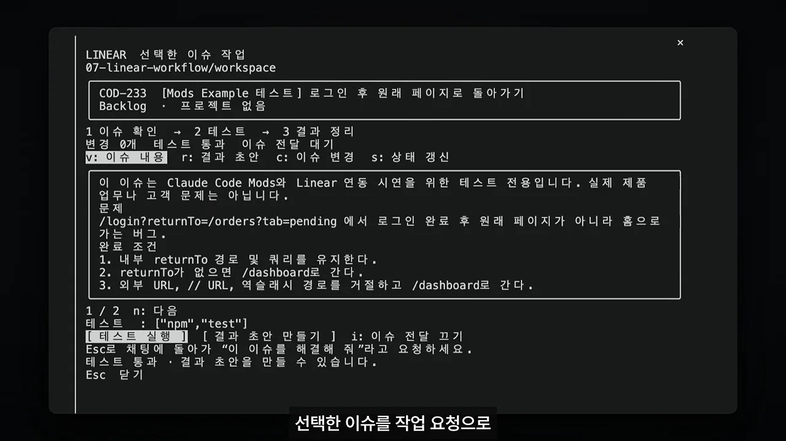
3. 문단 수정
옆 패널에서 고칠 문단의 연필 버튼을 누르면 입력칸이 열려요. 화면의 what to change in lines 9- 칸에 어떻게 바꿀지 적고 send를 누르면 돼요. Claude가 그 문단을 맥락으로 받아 고치고, 패널도 고친 내용을 그대로 보여 줘요.
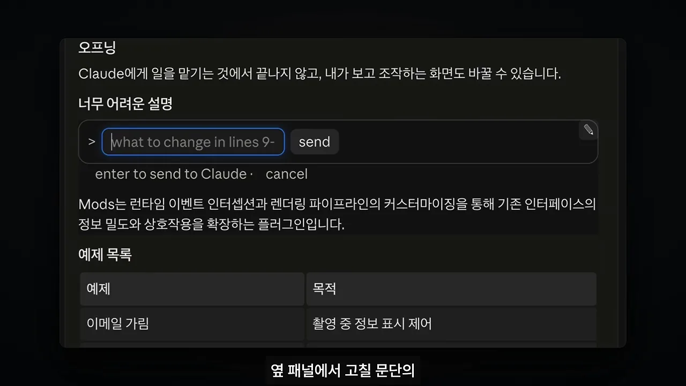
4. 브라우저
영상이 '굉장히 많이 쓰는 기능'이라고 꼽은 사례예요. 지원하는 터미널이라면 Claude Code 옆에 브라우저를 직접 붙일 수 있어요. 왼쪽 그림처럼 대화와 웹페이지를 한 화면에 나란히 두고, 오른쪽 코드가 브라우저를 열어 패널에 그려요.
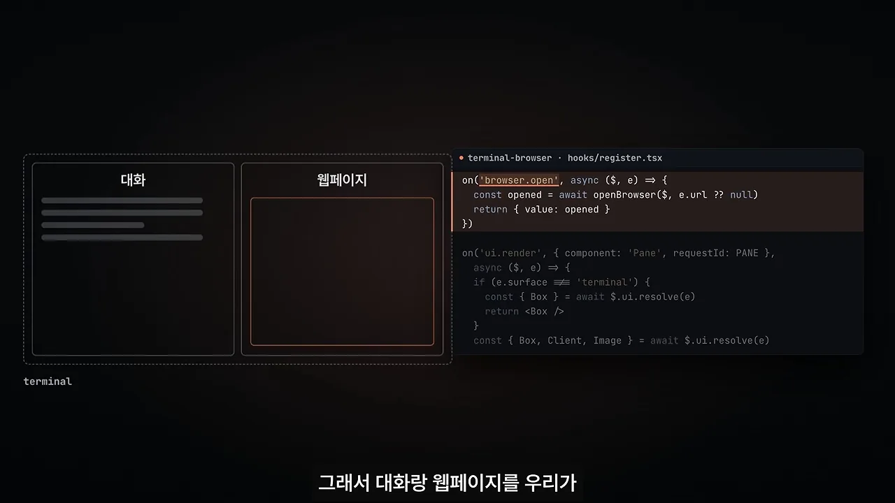
5. 다이어그램
Claude가 응답에 Mermaid 코드를 쓰면 원래는 글자로만 보여요. 이 Mod는 그 자리에 문자로 그린 도식을 대신 보여 줘요. 코드를 보면 mermaidBlocksOf(e.props.text)로 응답에서 Mermaid 블록을 찾고, drawn(block.source, room)으로 그림을 만들어 바꿔 넘겨요. 왼쪽이 그렇게 그려진 주문 → 결제 → 성공 → 배송 시작 흐름이에요.
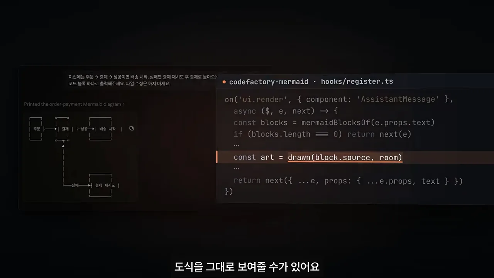
6. 게임
이런 기능이 나오면 꼭 게임을 붙이는 사람이 있다고 해요. 화면은 테트리스예요. 아래 상태 줄에 score 12 · lines 0 · best 44가 보여요. 응답을 기다리는 동안 시간을 보내는 용도예요.
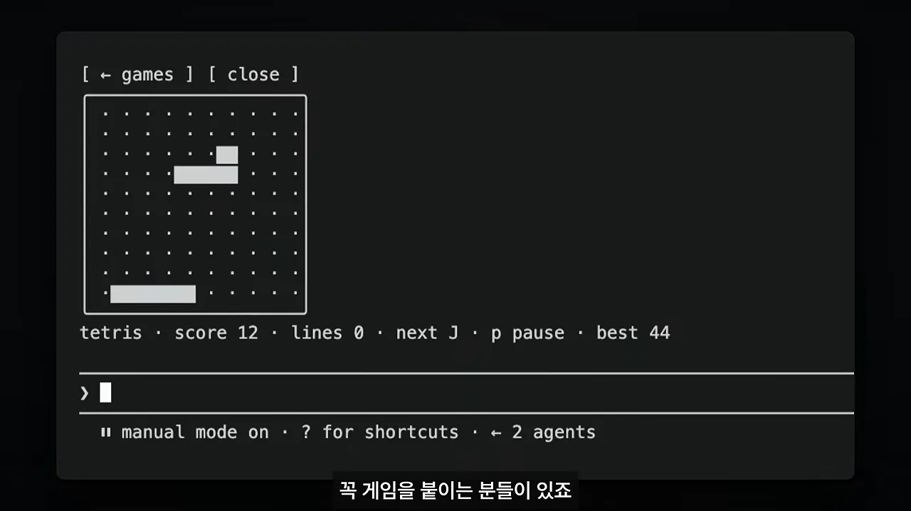
← 2 agents 표시로 보아 에이전트가 일하는 동안 띄워 둔 화면이에요. 영상 06:21에서 보기7. 한국어 UI
Claude Code가 원래 그리는 화면도 바꿀 수 있다는 예예요. Config 탭의 설정 항목이 자동 압축, 사용 한도 도달 시 자동 계속, 코드 되돌리기 (체크포인트)처럼 한국어로 바뀌었어요. 다른 언어도 같은 방식으로 돼요.
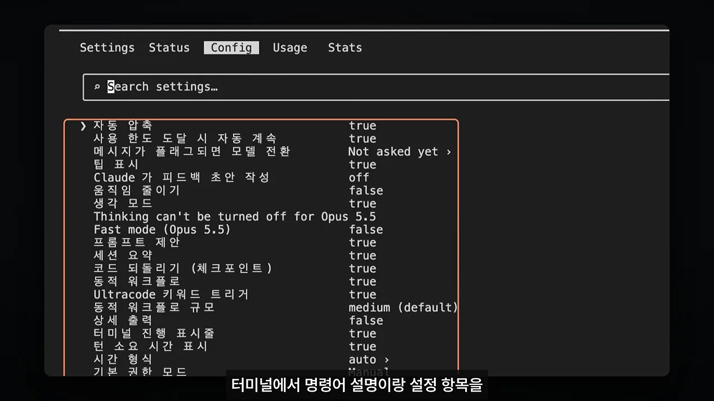
8. 문자 가림
앞에서 뜯어본 이메일 가림을 넓힌 사례예요. 촬영 중 화면을 공유하거나 출력이 그대로 나가면 안 될 때, 이메일 주소뿐 아니라 Base64로 인코딩된 값이나 JWT(JSON Web Token) 토큰도 가릴 수 있어요. 아래는 표시하기를 누른 뒤의 화면이에요. 주소가 드러났고, 입력창 위 버튼은 다시 가리기로 바뀌었어요.
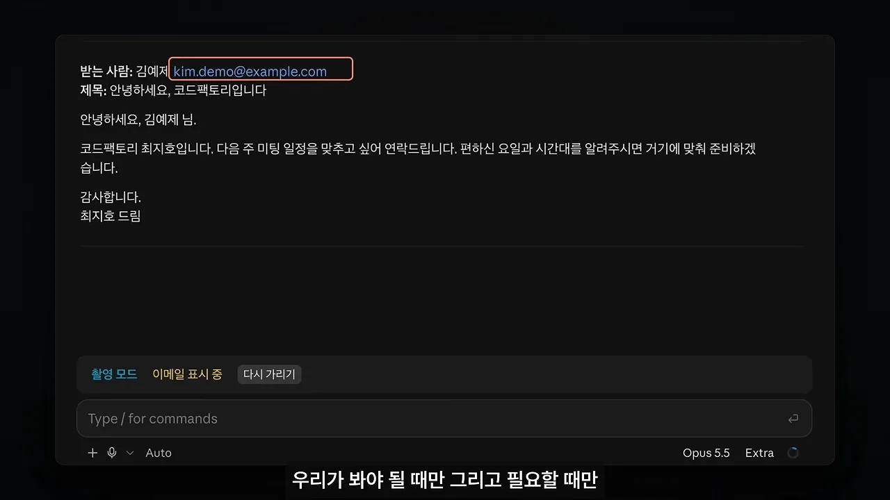
9. 컨텍스트 사용량
입력창 위 한 줄에 현재 컨텍스트 사용량을 띄워요. 화면에는 9% of context 87.4k / 1M과 최근 턴의 증가량을 보여 주는 last turns 막대가 있어요. 파일을 읽거나 작업을 이어 갈 때 컨텍스트가 얼마나 늘어나는지 한눈에 볼 수 있어요.
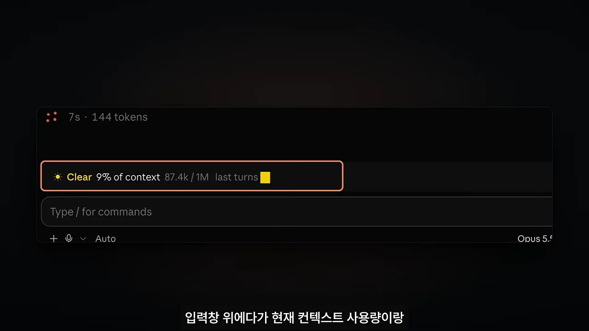
Token weather가 이 줄을 그리는 Mod예요. 영상 07:03에서 보기10. 에이전트 관제
현재 세션에서 돌고 있는 에이전트를 오른쪽 패널에 모아 보여 줘요. 패널의 Agents 목록에 Explore(Read architecture.md) 같은 항목이 하나씩 쌓여요.
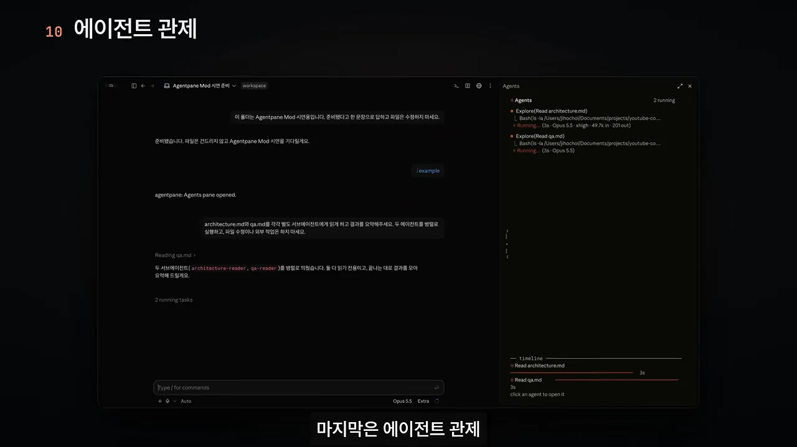
목록에서 에이전트 하나를 누르면 그 에이전트의 대화와 도구 사용 내역이 열려요. 아래 화면은 architecture.md를 읽으라는 지시를 받고 Bash로 디렉터리를 찾은 기록이에요. 영상은 동적 워크플로처럼 에이전트를 많이 돌릴 때 특히 유용하다고 해요.
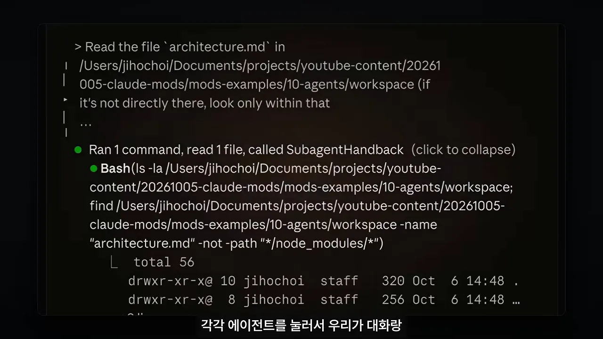
직접 만들어 보기
이제 떠올렸던 기능을 직접 만들어 보라는 게 영상의 마무리예요. 떠오른 대로 말하면 된대요. 화면 위 요청이 영상의 예시예요. '입력창 위에 현재 Git 브랜치를 보여주는 모드를 만들어줘'라고 하면, 아래에 놓인 plugin.json, hooks.json, register.ts를 Claude가 알아서 써 줘요.
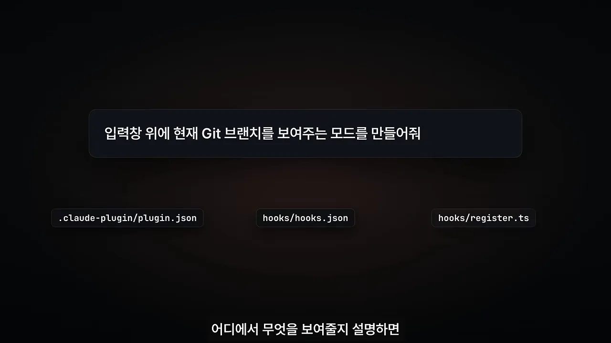
그래서 알아야 할 건 '어디까지 가능한지'뿐이에요. 아래 화면이 그 지도예요. 입력창 위 AbovePrompt, 응답 자리 AssistantMessage, 오른쪽 Pane. 이 영상에 나온 사례는 모두 이 세 자리 중 하나에 그려졌어요.
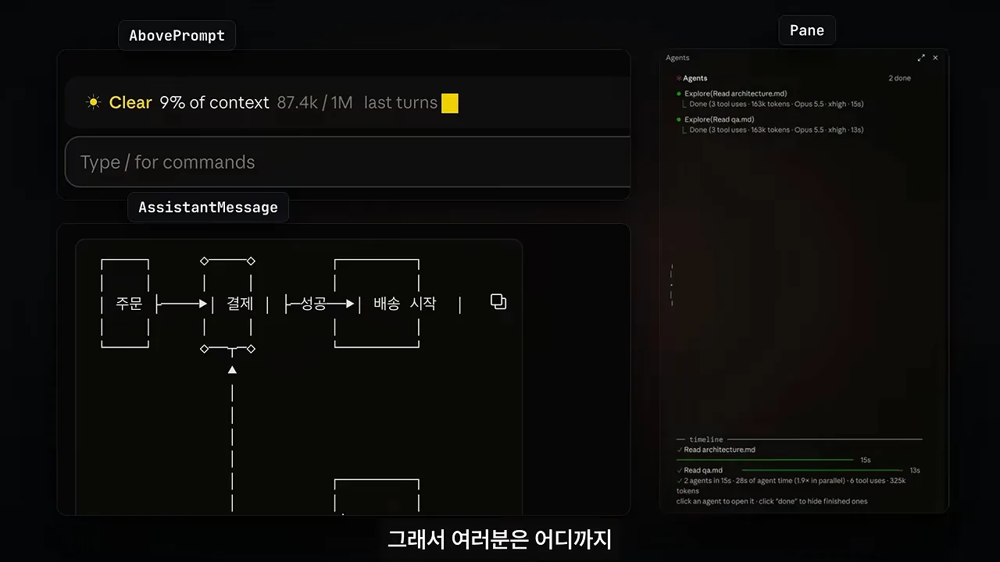
Mod는 플러그인처럼 설치되니까 배포하거나 다른 사람과 나눌 수도 있어요. 영상은 평소 Claude Code를 쓰면서 따로 확인하던 정보나 반복해서 입력하던 요청을 Mod로 만들어 보라고 권해요. 그 정보를 계속 띄워 두거나 자주 누르던 버튼을 입력창 위에 두면 작업 효율이 꽤 오른다는 거예요.